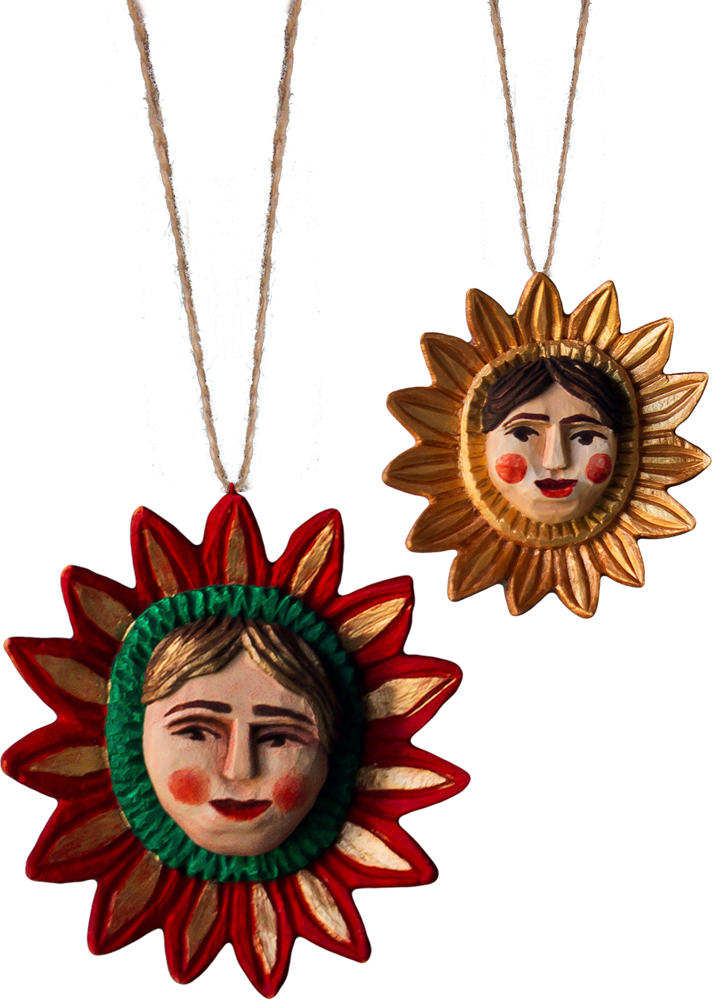

|  |
Частинка гуцульської культури у Ваших руках!Hutsul Authentica - це бренд, заснований майстрами, які люблять мистецтво Гуцульщини та поважають традиції. Ми відновлюємо старовинні автентичні техніки та прийоми виконання та повертаємо із забуття давні образи, характерні для гірського регіону. Наша ціль - відродити, популяризувати та зберегти декоративно-прикладне мистецтво гуцулів та поділитись ним з усіма! |

Як замовити?
З повним асортиментом товару ви можете ознайомитись за посиланням:
www.etsy.com/shop/HutsulAuthentica
Для замовлення напишіть нам:
hutsul.authentica@gmail.com
Або зателефонуйте за номером:
+380 000 000 000